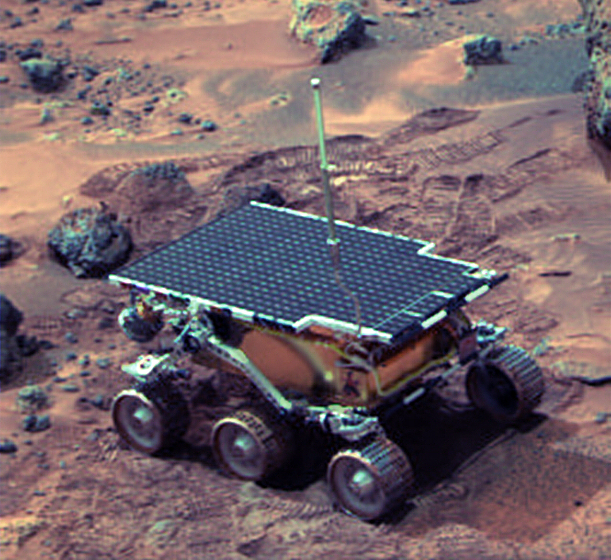

Que vayan primero ellos...
Tecnologías y Arquitecturas Robóticas
Los primeros pasos, la Luna
Programa Lunokhod
- Primer rover en ser controlado en la Luna en 1969
- Duró más de 30 años (récord actual)
- Equipado con antenas, cámaras de televisión y dispositivos para examinar el suelo lunar.
Programa "Apollo Lunar Roving Vehicle
- Rovers en las misiones Apollo 15, 16 y 17
- Podía transportar hasta dos astronautas, su equipamiento y muestras lunares.
- Tenía baterías no recargables, que duraron 92 Km (también para cámaras y transmisiones)
Programa "Apollo Lunar Roving Vehicle

Misión Chang’e 3
- Poca información proporcionada por la agencia espacial China.
- Diseño e instrumentos similares al Spirit y Opportunity lanzados a Marte.
Objetivos de las misiones a Marte
- Determinar la naturaleza y hacer inventario de los compuestos basados en carbono que pudieran encontrarse en la superficie.
- Investigar la química de los bloques que construyen la vida (carbono, hidrógeno, nitrógeno, oxígeno, fósforo y sulfuro).
- Identificar restos de procesos biológicos.
- Interpretar los posibles procesos de formación y modificación de rocas
- Determinar la presencia y el estado y distribución de ciclos de agua y dióxido de carbono.
Mars Pathfinder (rover Sojourner)
- Primer rover en pisar Marte.
- Prueba de concepto para varias tecnologías utilizadas, como:
- El sistema de aterrizaje con airbag
- El sistema para sortear obstáculos automáticamente
- Se aprovechó posteriormente en la misión Mars Exploration Rovers.
- Equipado con paneles solares y baterías no recargables.
- CPU 80C85 (variante del 8085, sucesor del 8080) a 2 MHz y 64 KBytes de RAM.
- Comunicación con modems de 9600 baudios
- Espectrómetro de rayos X (APXS)
- Dos cámaras monocromas y una a color
Mars Pathfinder (rover Sojourner)

Mars Express Orbiter y Beagle 2
- La misión se trataba de la puesta en órbita del Mars Express y del posterior lanzamiento del “laboratorio en tierra” Beagle 2.
- El Beagle 2 era un rover con un brazo robótico con:
- Cámaras estéreo
- Microscopio
- Espectŕometro Mössbauer
- Espectrómetro Rayos X
- Taladro
- Beagle 2 nunca se comunicó con tierra tras su separación del Express.
- Aún así, el express ha enviado increíbles imágenes 3D e imágenes a color del planeta errante.
Mars Express Orbiter y Beagle 2
Mars Exploration Rovers
- Se lanzaron dos rovers a lados opuestos del planeta Marte en 2003 para obtener pistas sobre el pasado de Marte, rocas y suelos que puedan dar información sobre la existencia de agua en el pasado.
- Spirit dejó de emitir comunicación en 2010 pero el Opportunity sigue funcionando actualmente junto con Curiosity.
- Los dos rovers tienen el mismo diseño (son gemelos):
- 6 ruedas y cada una con su propio motor
- 180 Kg y 1.5x2.3x1.6m de tamaño
- Placas solares de 140W y baterías de ión-litio
- CPU RAD6000 a 20 MHz y 120 MB de DRAM, 3 MB de EEPROM y 256 MB de memoria flash
- Antena omnidireccional de corto alcance para comunicarse con los satélites y una de largo alcance para comunicación directa con la Tierra.
Mars Exploration Rovers
- Los instrumentos científicos utilizados son:
- Cámara panorámica para la textura y color del terreno
- Cámara de navegación monocroma para la conducción (menor resolución pero mayor campo de visión)
- Espectrómetro de emisiones termales en miniatura (Mini-TES)
- Dos cámaras de 120º de campo de visión (Hazcam)
- También tiene un brazo robótico equipado con:
- Espectrómetro Mössbauer
- Espectrómetro de rayos X
- Imanes
- Unidad de captura de imágenes microscópicas
- Herramienta de abrasión de rocas
Mars Exploration Rovers

Mars Science Laboratory (MSL)
Mars Science Laboratory (MSL)
- Se trata de la misión más ambiciosa de la NASA hasta la fecha.
- El objetivo último de la misión (no por ello el más importante desde un punto de vista científico) es el de realizar estudios del clima y la geología que permitan una futura misión tripulada.
- El instrumental se centra en la cápsula de transporte y el vehículo de exploración marciana Curiosity (junto al equipamiento de aterrizaje.
El viaje
- Cápsula + EDL (Entry-Descent-Landing) = 3.893 Kg
- MEDLI
- Conjunto de sensores y computadores que toman datos de la atmósfera marciana
El rover
- Alcanza hasta 90 m/h y tiene una masa de 899 kg
- Generador Termoeléctrico de Radioisótopos
- Este vehículo es en realidad un laboratorio móvil
- Sistema de comunicación
- Transpondedor de Espacio Profundo de Banda X (15 bit/s hasta 32 kbit/s)
- Radio UHF (2 Mbit/s y 256 kbit/s)
Instrumentación

Mast Camera (MastCam)
- Sistema de visión principal
- Consta de dos cámaras (binocular)
- MAC: Medium Angle Camera
- NAC: Narrow Angle Camera
- Codificador de vídeo hardware (compresión en tiempo real).
Chemistry and Camera complex (ChemCam)
- Es el principal componente de análisis geológico.
- Consta de dos componentes principales:
- LIBS (Laser-Induced Breakdown Spectroscopy): Se trata de un potente láser cuyo objetivo es vaporizar un punto circundante
- RMI ( Remote Micro Imager): Telescopio que capta la luz del punto siendo vaporizado
- Con estos componentes es capaz de analizar el espectro de luz en el punto de evaporación de la roca circundante hasta 7 metros de distancia del Curiosity
Chemistry and Camera complex (ChemCam)
Hazard avoidance cameras (hazcams)
- Lo considero de interés para la asignatura pues es la opción que tomó la NASA para un problema que hemos tratado en la asignatura.
- Sistema de visión estereoscópica:
- Cuatro cámaras (replicadas, dos delante y dos detrás)
- Solo cuatro están activas concurrentemente.
- Es capaz de localizar y evitar obstáculos en tiempo real a partir de la imágen 3D
- Es de vital importancia ya que el control de base no es en tiempo real y ha de ser reactivo al ambiente
Chemistry and Mineralogy (CheMin)
- Instrumento para analizar la composición de la superficie marciana cuantificando la abundancia de minerales
- Se compone de:
- Un taladro en el brazo del Curiosity que realiza perforaciones y toma muestras
- Un haz de rayos-X se dirige hacia el polvo que difracta los rayos en ángulos característicos según los minerales presentes.
Robotic arm
- Tiene una extensión de 2.1 m y una cabeza capaz de rotar 350º.
- Este brazo instrumenta a su vez 6 herramientas de diferentes experimentos entre los que están:
- APXS (Un segundo espectógrafo por rayos-x que he omitido en la presentación)
- MAHLI (Hablaré de el a continuación)
- Diferentes herramientas como el la broca y el aspirador del CheMin, escobilla, etc...
Mars Hand Lens Imager (MAHLI)
- MAHLI es la cámara que remata el brazo robótico del Curiosity. Esta cámara está diseñada para obtener imágenes de objetos pequeños con gran precisión.
- Algunas de las características de esta cámara son:
- Resolución de 1600x1200 píxeles
- 13.5 micrómetros por píxel
- Además cuenta con un procesador que le permite almacenar las imágenes en crudo o comprimirlas.